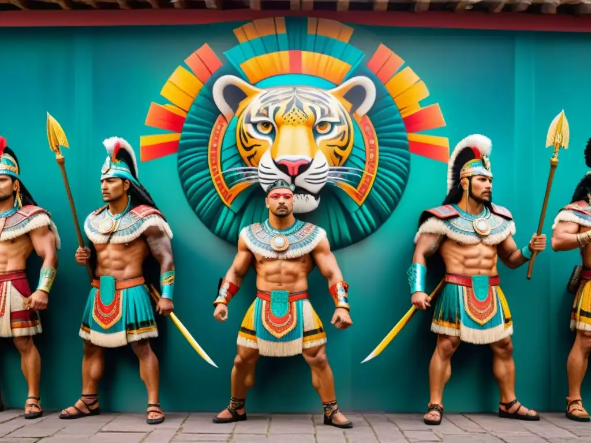

Imagina que tienes 20 años en el siglo XV. Eres azteca. Llevas años entrenando en el calmécac — la escuela de élite donde te forman en guerra, astronomía, filosofía y religión. Has demostrado valentía. Has sobrevivido batallas. Pero para convertirte en lo que sueñas ser, falta una última prueba.
Tienes que capturar cuatro enemigos vivos en combate. Y si lo logras, hay un lugar al que irás a consagrarte. Un cerro. Un templo tallado en roca viva. Un lugar que hoy llamamos Malinalco.
¿Quiénes eran exactamente?
Los Guerreros Águila y los Guerreros Jaguar no eran simplemente soldados buenos. Eran las dos órdenes militares más prestigiosas del Imperio Azteca — el equivalente prehispánico de una fuerza especial de élite combinada con una orden religiosa sagrada.
Pertenecer a cualquiera de estas órdenes significaba haber llegado a la cúspide del escalafón militar. La mayoría de los guerreros aztecas nunca lo lograría. Los que sí lo hacían, eran tratados como seres a medio camino entre los hombres y los dioses.
Y aquí está el dato que pocos conocen: estas dos órdenes eran las únicas en todo el Imperio Azteca que realizaban sus ceremonias de iniciación en Malinalco. No en Tenochtitlan, la capital. No en Teotihuacan, la ciudad sagrada. Aquí. En este cerro. En este pueblo que hoy visitas como destino turístico.
Águila vs Jaguar: la dualidad sagrada
Las dos órdenes no eran lo mismo — representaban las dos mitades del cosmos mexica:
- Representa el sol y la guerra diurna
- Símbolo de la luz y el cielo
- Usaba yelmo con forma de cabeza de águila
- En batalla: explorador, espía y mensajero
- Custodio de la energía solar
- Su muerte en batalla = se convertía en el sol
- Representa la noche y el inframundo
- Símbolo de la oscuridad y la tierra
- Piel de jaguar y máscara del felino
- En batalla: primera línea, ferocidad total
- Custodio de la energía nocturna
- Su muerte en batalla = se convertía en jaguar celestial
Esta dualidad no era decorativa. Para los mexicas, el universo se sostenía en el equilibrio entre la luz y la oscuridad, el sol y la luna, el día y la noche. Tener ambas órdenes iniciadas en el mismo templo era mantener ese equilibrio cósmico.
El requisito imposible
Para aspirar a cualquiera de las dos órdenes, el guerrero azteca tenía que cumplir el mismo requisito fundamental: capturar al menos cuatro enemigos vivos en combate.
No matarlos. Capturarlos. La diferencia es enorme. Matar a alguien en batalla era relativamente simple — el enemigo te atacaba, tú lo atacabas. Capturarlo vivo, en cambio, requería control, técnica, valentía extrema y la capacidad de dominar físicamente a alguien que quería matarte.
Las guerras floridas eran conflictos organizados específicamente para capturar prisioneros con fines rituales. No buscaban territorio ni riqueza — buscaban cuerpos vivos para los sacrificios que mantenían al sol en movimiento. Para el guerrero azteca, capturar enemigos en estas batallas era literalmente sostener el universo.
La captura de prisioneros no era solo un logro militar. Era una ofrenda a los dioses. Era la demostración de que eras digno de algo más grande. Y cuando llegabas a cuatro capturas, las puertas de las órdenes de élite se abrían ante ti.
El entrenamiento que pocos resistían
Antes de la batalla, venían años de preparación. Los futuros guerreros de élite ingresaban al calmécac — la escuela de formación más exigente del Imperio. Allí no solo aprendían a combatir.
Los que llegaban al final de este proceso eran hombres transformados. No solo físicamente. La formación del calmécac buscaba producir algo específico: un ser humano que entendiera que su vida no le pertenecía a él, sino al sol. Morir en batalla no era una tragedia — era el destino más glorioso posible.
La iniciación en Malinalco
Y llegaba el momento. El guerrero había capturado sus cuatro prisioneros. El calmécac lo había formado. Los sacerdotes lo habían examinado. Era el momento de venir aquí.

La subida al Cerro de los Ídolos no era accidental. Cada escalón era parte del ritual. El esfuerzo físico de la ascensión era una ofrenda en sí misma. Y cuando el guerrero llegaba a la entrada del Cuauhcalli — la boca de la serpiente — sabía que lo que cruzaba no era solo una puerta.
Era una frontera. Al entrar, moría como hombre común. Al emerger del interior oscuro de la roca hacia la cámara circular, renacía como otra cosa. Un Guerrero Águila. Un Guerrero Jaguar. Un custodio del sol.
Dentro del Cuauhcalli, rodeado de las esculturas de águilas y jaguares talladas en la roca, el nuevo guerrero realizaba ofrendas de sangre en el orificio sagrado del centro. Los sacerdotes pronunciaban los cánticos de consagración. El guerrero recibía su atuendo — el yelmo de águila o la piel de jaguar — y su identidad quedaba transformada para siempre.
En el campo de batalla
Una vez iniciados, los guerreros de las dos órdenes tenían roles complementarios pero distintos en combate:
Lo más poderoso de estos guerreros no era su técnica de combate — era su disposición mental. Un hombre que genuinamente no teme a la muerte y que considera morir en batalla como el destino más glorioso posible es un adversario sin igual. Los conquistadores españoles lo documentaron: los Guerreros Águila y Jaguar no retrocedían.
Por qué solo Malinalco
Esta es la pregunta que más me hacen los visitantes cuando suben al cerro: ¿por qué aquí? ¿Por qué Malinalco y no Tenochtitlan?
La respuesta tiene varias capas. La primera es geográfica: Malinalco estaba en una posición estratégica, vigilando rutas comerciales críticas y protegiendo un acueducto vital hacia Tenochtitlan. Tener aquí a tu élite militar era inteligencia táctica.
Pero la razón más profunda es espiritual. Malinalco era el territorio de Malinalxóchitl — la diosa de la hechicería, las serpientes y la magia oscura. Un lugar con esa energía era exactamente donde debías forjar guerreros que iban a habitar entre la vida y la muerte.
Y la razón definitiva es arquitectónica: solo aquí existía el Cuauhcalli — el único templo monolítico de América, tallado en la roca misma del cerro. No era un edificio construido por hombres. Era un espacio arrancado a la montaña. Un lugar que no pertenecía completamente al mundo humano.
Cuando caminas por el Barrio de San Juan en Malinalco — donde están las propiedades de Cantera & Calma — estás caminando por el territorio que los Guerreros Águila y Jaguar consideraban sagrado. El cerro que ves desde las ventanas es el mismo que ellos subían para consagrarse.